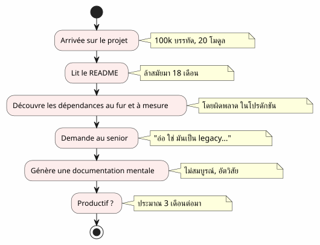
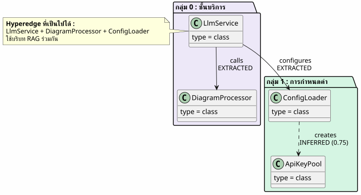
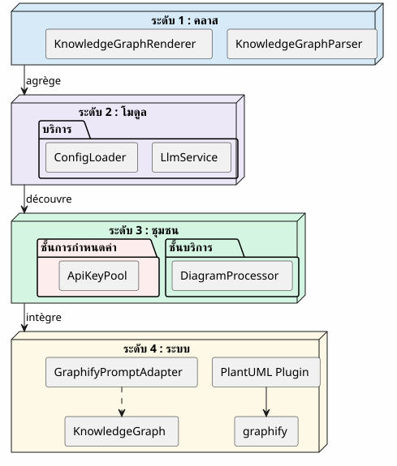
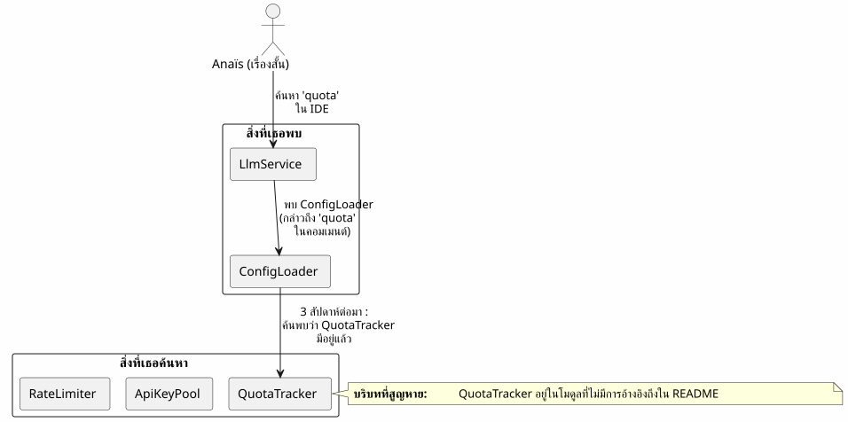
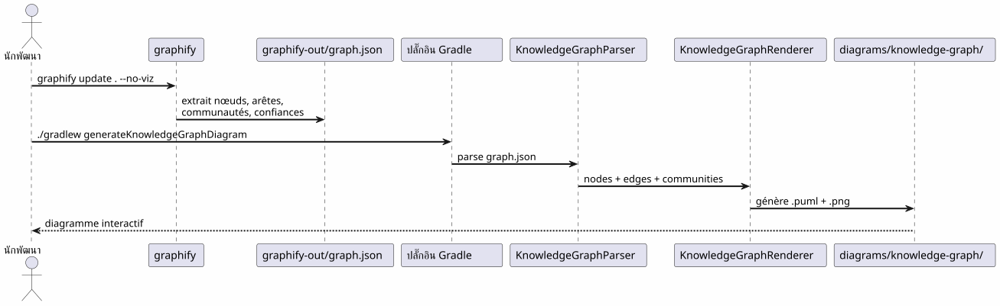
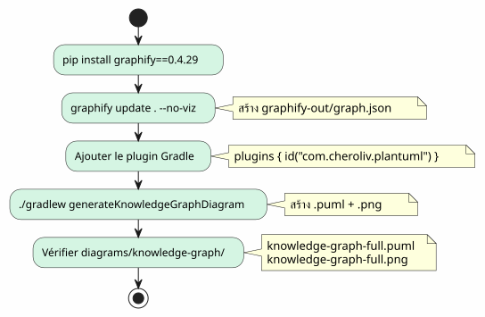
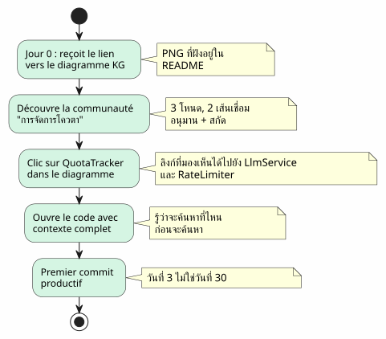
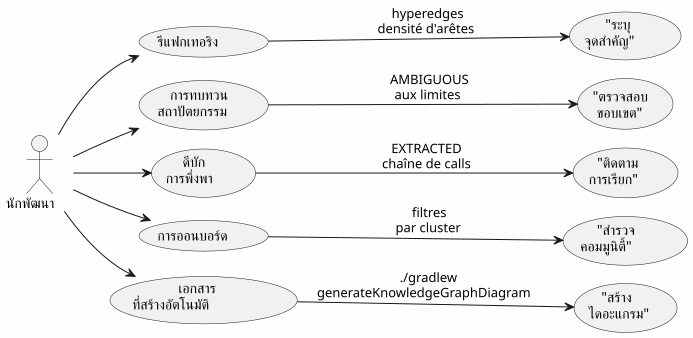

Knowledge Graph เป็นเครื่องมือสำหรับทำความเข้าใจโค้ดเบส
เผยแพร่เมื่อ 20 April 2027
- กำแพงการออนบอร์ด
- Knowledge Graph คืออะไร?
- ระดับความเข้าใจ 4 ระดับ
- บริบทที่สูญหาย: สถานการณ์ที่เป็นรูปธรรม
- Pipeline : จากโค้ดสู่แผนที่ตามสั่งด้วยคำสั่งเดียว
- ประเภทของเส้นเชื่อม: สิ่งที่ความไว้วางใจบอก
- 5 นาทีในการสร้าง Knowledge Graph ของคุณเอง
- คุณค่าสำหรับการออนบอร์ด: สถานการณ์ของ Anaïs ฉบับปรับปรุง
- คุณค่าสำหรับการนำทางประจำวัน
- ข้อจำกัดและมุมมอง
- บทสรุป
เวลาในการอ่าน : 15 minutes
คุณเข้ามาในโปรเจกต์ขนาด 100,000 บรรทัด ยี่สิบโมดูล หนึ่งร้อยคลาส การพึ่งพาที่มองไม่เห็น และประวัติการรีแฟกเตอร์ที่ถูกลืม README สัญญาว่าเป็นสถาปัตยกรรม "microservices" แต่โค้ดกลับเล่าเรื่องอีกอย่าง ต้องใช้เวลานานแค่ไหนจึงจะทำงานได้อย่างมีประสิทธิภาพ?สามเดือน— ถ้าคุณโชคดี และถ้าแผนที่โค้ดแบบอินเทอร์แอกทีฟที่สร้างขึ้นโดยอัตโนมัติสามารถลดสิ่งนั้นให้เหลือสามวันได้ล่ะ?
- ก๊อก
-
Please provide the French text you would like me to translate into Thai.
กำแพงการออนบอร์ด
นักพัฒนาทุกคนเคยเจอฉากนี้:
-
วันที่ 1 : เราจะแสดง README ให้คุณดู (อัปเดตล่าสุดเมื่อ 18 เดือนที่แล้ว)
-
วันที่ 3 : คุณค้นพบว่าโมดูล`billing`เรียกโมดูลอย่างลับๆ`notification`
-
วันที่ 7: พี่อาวุโสคนหนึ่งบอกคุณว่า "อ่าใช่ คลาสนี้จริง ๆ แล้วทำสองอย่าง เราวางแผนไว้ว่าจะแยกมันออกจากกัน
-
วันที่ 14 : คุณตระหนักว่าความรู้เชิงธุรกิจทั้งหมดอยู่ใน`utils/LegacyHelper.java`— ไฟล์ที่ไม่ได้ถูกอ้างอิงถึงที่ใดเลย

ปัญหาไม่ใช่การขาดเอกสาร — แต่คือการขาดแผนที่. แผนที่ที่แสดงอาณาเขตจริง ไม่ใช่อาณาเขตในจินตนาการของการออกแบบใหม่ครั้งล่าสุด
Knowledge Graph คืออะไร?
Knowledge Graph คือการนำเสนอแบบมีโครงสร้างของรู้ที่มีอยู่ในโค้ดเบสของคุณ:
| เอนทิตี | ตัวอย่างในโค้ด | บทบาทในกราฟ |
|---|---|---|
โหนด |
คลาส, ฟังก์ชัน, แนวคิด |
จุดยอดของกราฟ |
สัน |
การเรียก, การสืบทอด, การนำเข้า |
ความเชื่อมโยงระหว่างสองโหนด |
ชุมชน |
กลุ่มของคลาสที่เกี่ยวข้อง |
คลัสเตอร์ภาพ |
ประเภทของขอบ |
สกัดแล้ว, อนุมานได้, กำกวม |
ความไว้วางใจในความสัมพันธ์ |
คะแนนความเชื่อมั่น |
0.0 à 1.0 |
ความน่าเชื่อถือของเส้นเชื่อม INFERRED |
ไฮเปอร์เอจ |
ความสัมพันธ์ 3+ โหนด |
ความซับซ้อนทางสถาปัตยกรรม |

ความแตกต่างจากไดอะแกรม UML ธรรมดาคืออะไร?ไดอะแกรม UML แสดงสิ่งที่นักพัฒนา ตัดสินใจ จะแสดง ส่วน Knowledge Graph แสดง สิ่งที่อยู่จริง รวมถึงการพึ่งพาที่ซ่อนอยู่และแนวคิดที่เกิดขึ้นใหม่
ระดับความเข้าใจ 4 ระดับ
กราฟความรู้ช่วยให้สามารถนำทางไปยังสี่ระดับPlease provide the French text you’d like me to translate into Thai.

| ระดับ | คำถาม | ระดับความละเอียด | เครื่องมือ |
|---|---|---|---|
1 — คลาส |
คลาสนี้ทำอะไร? |
บรรทัดโค้ด |
IDE, เบราว์เซอร์ |
2 — โมดูล |
ไฟล์ของโมดูลนี้มีอะไรบ้าง? |
แฟ้ม |
|
3 — ชุมชน |
แนวคิดใดบ้างที่ทำงานร่วมกัน |
กลุ่มที่เชื่อมโยง |
กราฟความรู้ |
4 — ระบบ |
ทุกอย่างเชื่อมโยงกันอย่างไร? |
สถาปัตยกรรมโดยรวม |
แผนภาพ KG ที่สมบูรณ์ |
หากไม่มี Knowledge Graph ระดับ 3 และ 4 คือไม่สามารถเข้าถึงได้— หรืออย่างน้อยก็เป็นอัตวิสัยและล้าสมัย
บริบทที่สูญหาย: สถานการณ์ที่เป็นรูปธรรม
ลองจินตนาการถึงนักพัฒนาคนใหม่ชื่อ Anaïs ที่เพิ่งเข้ามาในโปรเจกต์ เธอต้องเพิ่มฟีเจอร์ "quota tracking" สำหรับการเรียกใช้ LLM

ด้วย Knowledge Graph, Anaïs คงจะเห็นใน5 นาทีPlease provide the French text you’d like me to translate.
-
QuotaTracker`เกี่ยวข้องกับ`ApiKeyPool(ขอบNo French text was provided to translate. Please send the source text.) -
RateLimiter`เชื่อมโยงกับ`QuotaTracker(ขอบอนุมาน, ความมั่นใจ 0.82) -
โหนดทั้งสามนี้ประกอบเป็นชุมชนการจัดการโควตา
-
ไฮเปอร์เอจยังเชื่อมต่อเช่นกัน`LlmService`— จุดเริ่มต้น
Pipeline : จากโค้ดสู่แผนที่ตามสั่งด้วยคำสั่งเดียว
ไปป์ไลน์ Graphify + Plugin Gradle เปลี่ยนโค้ดเบสของคุณเป็นไดอะแกรม PlantUML ในสองคำสั่งPlease provide the French text you’d like me to translate.

ศูนย์ LLMทุกอย่างเป็นดีเทอร์มินิสติก: โค้ดเดียวกัน กราฟเดียวกัน ไดอะแกรมเดียวกัน ทำซ้ำได้ จัดเวอร์ชันได้ และเปิดดูได้แบบออฟไลน์
ประเภทของเส้นเชื่อม: สิ่งที่ความไว้วางใจบอก

ประเภทของเส้นเชื่อมมีความสำคัญอย่างยิ่งต่อการเริ่มต้นใช้งาน:
-
แยกออกมา: คุณสามารถท่องเว็บได้อย่างสบายใจ — มันอยู่ในโค้ด
-
อนุมาน(0.6-0.8) : น่าจะถูกต้อง แต่ควรตรวจสอบก่อนจะรีแฟกเตอร์
-
อนุมาน(0.8+) : เชื่อถือได้มาก — ใช้เป็นข้อมูลอ้างอิง
-
กำกวม: ระวัง จุดที่ละเอียดอ่อน ถามรุ่นพี่
5 นาทีในการสร้าง Knowledge Graph ของคุณเอง

# 1. Installer graphify
pip install graphify==0.4.29
# 2. Générer le Knowledge Graph
graphify update . --no-viz
# 3. Vérifier le JSON
cat graphify-out/graph.json | jq '.nodes | length'
# → 47 nœuds
# 4. Générer le diagramme
./gradlew generateKnowledgeGraphDiagram
# 5. Filtrer par communauté
./gradlew generateKnowledgeGraphDiagram -Pplantuml.kg.community="service layer"
# 6. Limiter la taille
./gradlew generateKnowledgeGraphDiagram -Pplantuml.kg.maxNodes=20คุณค่าสำหรับการออนบอร์ด: สถานการณ์ของ Anaïs ฉบับปรับปรุง
ด้วย Knowledge Graph สถานการณ์ของอานาอิสเปลี่ยนแปลงอย่างสิ้นเชิง:

Knowledge Graph ไม่ได้แทนที่ IDE— มันเติมเต็มให้กับมัน IDE แสดง*ที่ไหน* ; KG แสดง*ทำไม*และ*มันเชื่อมโยงกันอย่างไร*
คุณค่าสำหรับการนำทางประจำวัน
การออนบอร์ดไม่ใช่เพียงกรณีการใช้งานเดียว สำหรับนักพัฒนาระดับอาวุโส Knowledge Graph ใช้สำหรับ:

| กรณีการใช้งาน | KG ช่วยอย่างไร | ตัวอย่างที่เป็นรูปธรรม |
|---|---|---|
การรีแฟคเตอร์ |
แสดงภาพไฮเปอร์เอจ (ลิงก์ 3+) |
คลาสทั้ง 5 นี้เชื่อมโยงกันเสมอ — แยกโมดูลออกมา |
การทบทวนสถาปัตยกรรม |
ตรวจจับ AMBIGUOUS ที่ขอบเขต |
การเรียกระหว่าง billing และ notification ไม่แน่นอน |
ดีบัก |
ติดตามสตริง EXTRACTED |
ทำไม LlmService จึงเรียก LegacyHelper? |
การต้อนรับพนักงานใหม่ |
สำรวจชุมชนตามตัวกรอง |
'service layer' คืออะไร? |
เอกสารประกอบ |
สร้างไดอะแกรมใน CI |
README อัปเดตอยู่เสมอ |
ข้อจำกัดและมุมมอง
Knowledge Graph ไม่ใช่ไม้กายสิทธิ์:
| ขีดจำกัด | คำอธิบาย | การหลีกเลี่ยง |
|---|---|---|
โค้ดสแตติกเท่านั้น |
ไม่มีรันไทม์ ไม่มีโฟลว์ข้อมูล |
เติมด้วย traces APM |
INFERRED อาจไม่ถูกต้อง |
ขอบที่อนุมานได้จำเป็นต้องได้รับการตรวจสอบ |
คะแนนความเชื่อมั่น + การทบทวนโดยมนุษย์ |
ไม่มีอรรถศาสตร์ทางธุรกิจ |
KG รู้ว่า |
คำอธิบายประกอบด้วยมือหรือการประมวลผลภายหลังด้วย LLM |
ไม่มีความเป็นเวลา |
สแนปช็อตของโค้ด ไม่ใช่วิวัฒนาการของมัน |
สร้างเป็นประจำ + เปรียบเทียบเวอร์ชัน |
มุมมองขออภัย ไม่มีข้อความภาษาฝรั่งเศสให้แปลในข้อความที่ให้มา
-
ต่าง กก.: เปรียบเทียบสองเวอร์ชันเพื่อดูการเคลื่อนย้ายของชุมชน
-
KG แบบโต้ตอบ: คลิกที่โหนด → เปิด IDE ที่บรรทัดที่เกี่ยวข้อง
-
KG ในอดีต: แสดงภาพการเปลี่ยนแปลงของชุมชนเมื่อเวลาผ่านไป (หนี้ทางเทคนิคที่เคลื่อนย้าย)
บทสรุป
Knowledge Graph เปลี่ยนแปลงการกระทำโดดเดี่ยวและยาวนาน(ทำความเข้าใจโค้ดเบส) ในองก์เดียวแชร์และรวดเร็ว(ดูแผนที่)
นี่ไม่ใช่เอกสารประกอบ — นี่คือการทำแผนที่. แผนที่ที่อัปเดตตัวเองโดยอัตโนมัติ ซึ่งแสดงอาณาเขตจริง และช่วยให้นักพัฒนาทุกคน ไม่ว่าจะเป็นมือใหม่หรือผู้มีประสบการณ์ สามารถนำทางได้อย่างมั่นใจ
pip install graphify==0.4.29
graphify update . --no-viz
./gradlew generateKnowledgeGraphDiagram3 คำสั่ง 5 นาที แผนที่โค้ดเบสของคุณ